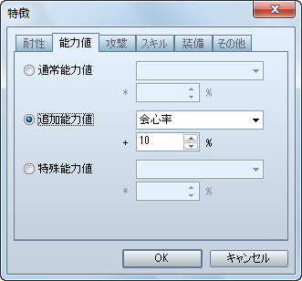

VX Ace では廃止されましたので、手動で配置位置を調整してください。
会心の一撃（VX では「クリティカルヒット」）を放つ敵キャラを作成する場合の設定方法です。
［敵キャラ］特徴 − 能力値 − 追加能力値 − 会心率

属性を伴う攻撃がどれだけ有効かを設定する方法です。
［敵キャラ］特徴 − 耐性 − 属性有効度
| VX での設定 | VX Ace での設定 |
| A | 200% |
| B | 150% |
| C | 100% もしくは設定しない |
| D | 50% |
| E | 0% |
| F | 廃止 |
ステートの付加がどれだけ成功するかを設定する方法です。
［敵キャラ］特徴 − 耐性 − ステート有効度

| VX での設定 | VX Ace での設定 |
| A | 100% |
| B | 80% |
| C | 60% |
| D | 40% |
| E | 20% |
| F | 0% |